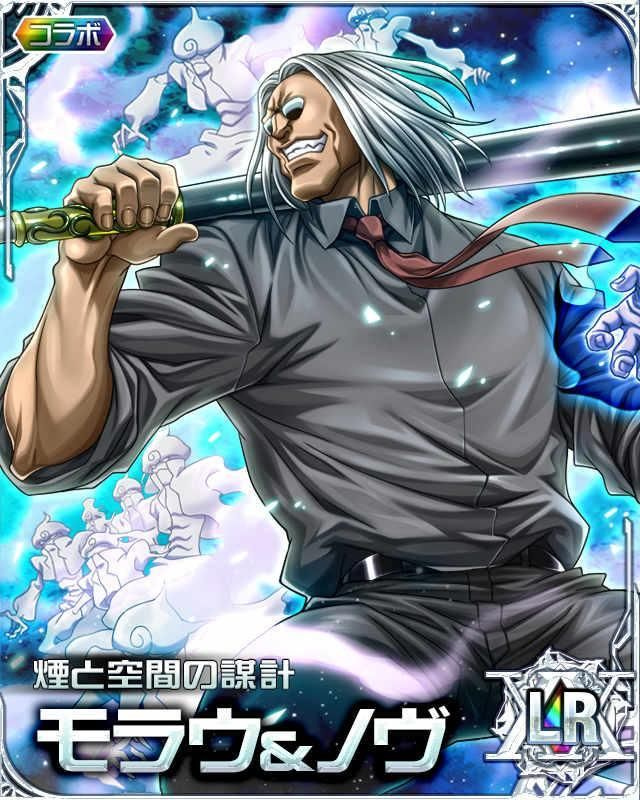

"Damn... It's always hard for me to fight with those who have similar interests."
Morau McKernesey

Biography
Morau McKernesey is a One-Star Sea Hunter and a Nen user specializing in smoke manipulation. Morau looks for rare sea animals or submerged treasures. During the Chimera Ant Incident, he was one of the leaders of the team to destroy the king. Later, he was invited as an expedition navigator to the Dark Continent.
Strength
- Meta-human physical strength
- Can split waves with pipe strikes
- High close-combat power
Speed & Reflexes
- Bullet-timing reactions via smoke clones
- High agility and battlefield awareness
- Can react to close-range projectile attacks
Endurance
- Extremely high lung capacity
- Survived explosions and extreme pressure
- Continues fighting under heavy damage
Nen Abilities
- Ten / Zetsu / Ren mastery
- Gyo enhancement techniques
- Smoke manipulation (Deep Purple)
- Smoke Soldiers (up to 216 constructs)
- Smoke Prison (impenetrable dome)
Combat Style
- Uses pipe as melee weapon
- Strategic fighter and trap user
- High intelligence and deception tactics
Experience
Elite Hunter with Chimera Ant expedition experience and high-level Nen combat knowledge.